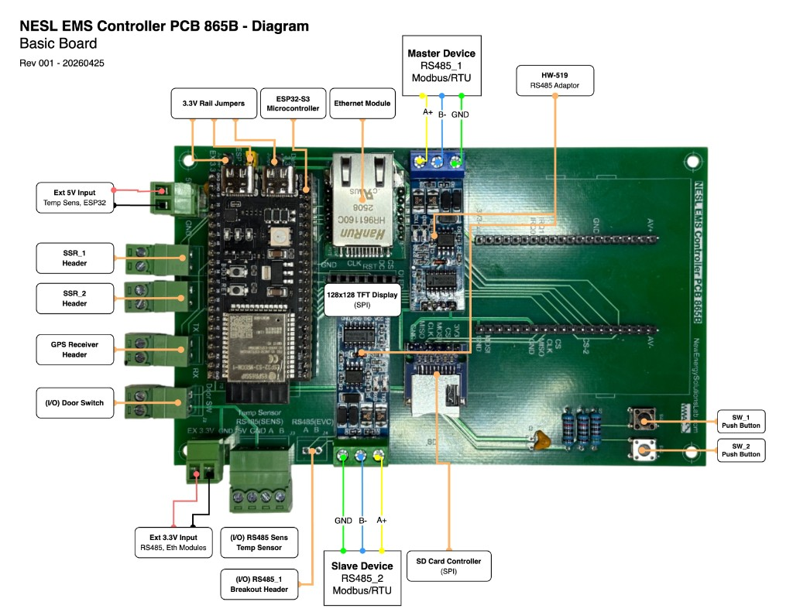

NESL · OpenAMI-aligned · multi-tenant edge metering · workshops & field deployments

Living parts list for the NESL 865B MeshEMS / Street-EMS dev kit — components, sources, and workshop kit quantities. Maintained in Google Sheets (view access; request edit from NESL / Energy IoT if you are building kits).
MeshEMS board BOM (Google Sheets) ↗
The MeshEMS board is an ESP32-based EMS PCB designed by NESL in alignment with OpenAMI — mesh-capable neighborhood-area networking for DCU backhaul when pole-to-pole RF redundancy is needed. OpenAMI metering firmware targets the NESL 865B: meshems-openami-metering.
Modbus RTU meters (DDS238, CHD130, DDSU666) or CircuitSetup ATM90E32 6-channel SPI; MQTT northbound; SSR load control. Schematic: nesl-meshems · BOM.
A multi-tenant edge metering system — one pole gateway for several customer circuits (~6 homes or loads) with clear separation of what belongs upstream vs downstream of the revenue meter. Used in workshops, hackathons, and field deployments; documented in the open so communities can reuse the lessons and develop technological autonomy early during rapid load growth.
A practical first step is to clarify and isolate knowledge on each side of the revenue meter. MeshEMS sits at that boundary and makes interoperability visible — what the DCU must speak upstream versus what each customer circuit needs downstream.
← revenue meter / gateway normalization →
OpenAMI — actionable telemetry and leakage visibility (feeder → branch → customer). OBIS · VMRS — shared register semantics northbound. ISV curates workshop notes, gap matrices, and distribution lists in alignment with EnAccess, Energy IoT, NESL, and field operators.
| Layer | MeshEMS |
|---|---|
| Southbound | DLMS / OEM meter interfaces via gateway firmware; pairs with CircuitSetup and other bench/field meter boards. |
| Edge | ESP32 EMS — mesh NAN between DCUs; optional when a single Street Pole gateway is not enough for feeder coverage. |
| Northbound | MQTT / JSON registers aligned to OBIS · VMRS — same OpenAMI contract as EnAccess MPM and operator backends. |
| Firmware | meshems-openami-metering (865B · OpenAMI) · ems-dev (Street Pole EMS) |
MeshEMS is a shared platform — not built for a single conference. Scheduled and in-flight uses include:
Street Pole EMS — single-pole ESP32 gateway prototyped at the 2025 Open Energy Hackathon; live metering, SunSpec telemetry, MQTT northbound.
MeshEMS — NESL PCB variant with mesh backhaul so multiple DCUs can form a neighborhood-area network when line-of-sight or single-hop RF is insufficient. Use when the OpenAMI deployment needs redundant pole-to-pole links, not when a standalone pole gateway is enough.
Bench and field kits need planned 5 V and 3.3 V rails — see 25 Jun 2026 notes · MeshEMS power architecture.